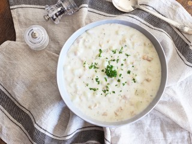

Other Recipes
Kyle Special

Description
Its Clam! Its Chowder! Mix it with rice and you got yourself a great meal!
serves 1-2
Equipment:
Ingredients:
- 1 Can New England clam Chowder
- 1 cup rice
- Optional Salt, Pepper
Steps:
- Cook 1 cup of rice in a rice cooker
- Heat clam chowder in a small pot or microwave
- Add spices of you like!
- Combine and enjoy!
Other Recipes